화공기사(구) (2018-04-28 기출문제)
1과목: 화공열역학
1. 1kg 질소가스가 2.3atm, 367K에서 압력이 2배로 증가하는데, PV1.3 = comst. 의 폴리트로픽 공정(Polytropic process)에 따라 변화한다고 한다. 질소가스의 최종 온도는 약 얼마인가?
- 360 K
- 400 K
- 430 K
- 730 K
(정답률: 66%)

2. 그림의 2단 압축조작에서 각 단에서의 기체는 처음 온도로 냉각 된다고 한다. 각 압력사이에 어떤 관계가 성립할 때 압축에 소요되는 전 소요일(total work)량이 최소가 되겠는가?
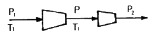
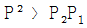
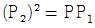
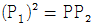
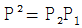
(정답률: 67%)
3. 공기표준 디젤 사이클의 구성요소로서 그 과정이 옳은 것은?
- 단열압축 → 정압가열 → 단열팽창 → 정적방열
- 단열압축 → 정적가열 → 단열팽창 → 정적방열
- 단열압축 → 정적가열 → 단열팽창 → 정압방열
- 단열압축 → 정압가열 → 단열팽창 → 정압방열
(정답률: 57%)
4. 비리얼 방정식(Virial equation)이 Z = 1 + BP 로 표시되는 어떤 기체를 가역적으로 등온압축 시킬 때 필요한 일의 양은? (단, Z = PV/RT, B : 비리얼 계수)
- 이상기체의 경우와 같다.
- 이상기체의 경우보다 많다.
- 이상기체의 경우보다 적다.
- B 값에 따라 다르다.
(정답률: 57%)
5. 열역학에 관한 설명으로 옳은 것은?
- 일정한 압력과 온도에서 일어나는 모든 비가역과정은 깁스(Gibbs)에너지를 증가시키는 방향으로 진행한다.
- 공비물의 공비조성에서는 끓는 액체에서와 같은 조성을 갖는 기체가 만들어지며 액체의 조성은 증발하면서도 변화하지 않는다.
- 압력이 일정한 단일상의 PVT 계에서
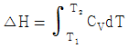
이다. - 화학반응이 일어나면 생성물의 에너지는 구성 원자들의 물리적 배열의 차이에만 의존하여 변한다.
(정답률: 60%)
6. 다음 그림은 A, B-2성분계 용액에 대한 1기압 하에서의 온도-농도간의 평형관계를 나타낸 것이다. A의 몰분율이 0.4 인 용액을 1기압 하에서 가열할 경우, 이 용액의 끓는 온도는 몇 ℃ 인가? (단, XA 는 액상 몰분률이고, yA는 기상 몰분률이다.)
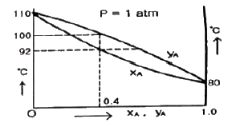
- 80℃
- 80℃ 부터 92℃ 까지
- 92 ℃부터 100℃ 까지
- 110℃
(정답률: 81%)
7. 여름철에 집안에 있는 부엌을 시원하게 하기 위하여 부엌의 문을 닫아 부엌을 열적으로 집안의 다른 부분과 격리하고 부엌에 있는 전기냉장고의 문을 열어놓았다. 이 부엌의 온도는?
- 온도가 내려간다.
- 온도의 변화는 없다.
- 온도가 내려갔다, 올라갔다를 반복한다.
- 온도는 올라간다.
(정답률: 68%)
8. 평형상수의 온도에 따른 변화를 알기 위하여 필요한 물성은 무엇인가?
- 반응에 관여한 물질의 증기압
- 반응에 관여한 물질의 확산계수
- 반응에 관여한 물질의 임계상수
- 반응에 수반되는 엔탈피 변화량
(정답률: 74%)
9. 다음 중 이심인자(acentric factor) 값이 가장 큰 것은?
- 제논(Xe)
- 아르곤(Ar)
- 산소(O2)
- 크립톤(Kr)
(정답률: 70%)
10. 열역학 제2법칙에 대한 설명 중 틀린 것은?
- 고립계로 생각되는 우주의 엔트로피는 증가한다.
- 어떤 순환공정도 계가 흡수한 열을 완전히 계에 의해 행하여지는 일로 변환시키지 못한다.
- 열이 고온부로부터 저온부로 이동하는 현상은 자발적이다.
- 연기관의 최대효율은 100% 이다.
(정답률: 75%)
11. 다음 중에서 공기표준오토(Air-Standard Otto) 엔진의 압력-부피 도표에서 사이클을 옳게 나타낸 것은?
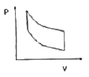
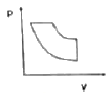
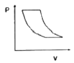
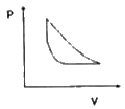
(정답률: 65%)
12. 등온과정에서 300K일 때 기체의 압력이 10atm 에서 2atm 으로 변했다면 소요된 일의 크기는? (단, 기체는 이상기체라 가정하고, 기체상수 R은 1.987cal/mol·K이다.)
- 596.1cal
- 959.4cal
- 2494.2cal
- 4014.3cal
(정답률: 80%)
13. 진공에서 CaCO3(s)가 CaO(s)와 CO2(g)로 완전분해하여 만들어진 계에 대해 자유도(Degree of freedom) 수는?
- 0
- 1
- 2
- 3
(정답률: 46%)
14. 압축인자(compressibility factor)인 Z를 표현하는 비리얼 전개(Virial expansion)는 다음과 같다. 이에 대한 설명으로 옳지 않은 것은? (단, B, C, D 등은 비리얼 계수이다.)
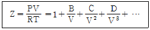
- 비리얼 계수들은 실제기체의 분자상호간의 작용 때문에 나타나는 것이다.
- 비리얼 계수들은 주어진 기체에서 온도 및 압력에 관계없이 일정한 값을 나타낸다.
- 이상기체의 경우 압축인자의 값은 항상 1이다.
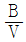
항은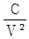
항에 비해 언제나 값이 크다.
(정답률: 65%)
15. 화학평형상수에 미치는 온도의 영향을 옳게 나타낸 것은? (단, ΔH°는 표준반응 엔탈피로서 온도에 무관하며, K0 는 온도 T0 에서의 평형상수, K 는 온도 T 에서의 평형상수이다.)
- 발열반응이면 온도증가에 따라 화학평형상수는 증가
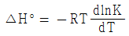
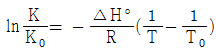
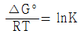
(정답률: 63%)
16. 1atm, 32℃의 공기를 0.8atm 까지 가역단열 팽창시키면 온도는 약 몇 ℃ 가 되겠는가? (단, 비열비가 1.4 인 이상기체라고 가정한다.)
- 3.2℃
- 13.2℃
- 23.2℃
- 33.2℃
(정답률: 69%)
17. 열역학 제1법칙에 대한 설명 중 틀린 것은?
- 에너지는 여러 가지 형태를 가질 수 있지만 에너지의 총량은 일정하다.
- 계의 에너지 변화량과 외계의 에너지 변화량의 합은 영(zero)이다.
- 한 형태의 에너지가 없어지면 동시에 다른 형태의 에너지로 나타난다.
- 닫힌 계에서 내부에너지 변화량은 영(zero)이다.
(정답률: 68%)
18. 다음 중 기-액 상평형 자료의 건전성을 검증하기 위하여 사용하는 것으로 가장 옳은 것은?
- 깁스-두헴(Gibbs-Duhem)식
- 클라우지우스-클레이페이론(Clausisus-Clapeyron)식
- 맥스웰 관계(Maxwell relation)식
- 헤스의 법칙(Hess's Law)
(정답률: 68%)
19. 오토(Otto) 사이클의 효율(η)을 표시하는 식으로 옳은 것은? (단, k = 비열비, rV = 압축비, rf = 팽창비 이다.)
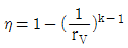
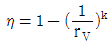
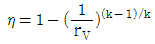
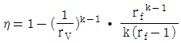
(정답률: 70%)
20. 0℃, 1atm 인 상태에 있는 100L 의 헬륨을 밀폐된 용기에서 100℃로 가열하였을 때 ΔH를 구하면 약 몇 cal 인가? (단, 헬륨은
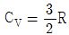
인 이상기체로 가정하고, 기체상수 R=1.987cal/mol·K 이다.)- 1477
- 1772
- 2018
- 2216
(정답률: 46%)
2과목: 단위조작 및 화학공업양론
21. 산소 75vol% 와 메탄 25vol%로 구성된 혼합가스의 평균분자량은?
- 14
- 18
- 28
- 30
(정답률: 69%)
22. 25℃에서 다음 반응의 정압에서와 정용에서의 반응열의 차이를 구하면 약 몇 cal 인가?
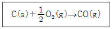
- 29.6
- 59.2
- 296
- 592
(정답률: 41%)
23. 500mL 플라스크에 4g 의 N2O4 를 넣고 50℃에서 해리시켜 평형에 도달하였을 때 전압이 3.63atm 이었다. 이때 해리도는 약 몇 % 인가? (단, 반응식은 N2O4 → 2NO2 이다.)
- 27.5
- 37.5
- 47.5
- 57.5
(정답률: 34%)
24. 임계상태에 관련된 설명으로 옳지 않은 것은?
- 임계상태는 압력과 온도의 영향을 받아 기상거동과 액상거동이 동일한 상태이다.
- 임계온도 이하의 온도 및 임계압력 이상의 압력에서 기체는 응축하지 않는다.
- 임계점에서의 온도를 임계온도, 그 때의 압력을 임계압력이라고 한다.
- 임계상태를 규정짓는 임계압력은 기상거동과 액상거동이 동일해지는 최저압력이다.
(정답률: 63%)
25. 어떤 공업용수 내에 칼슘(Ca)함량이 100ppm 이면 무게 백분율(wt%)로 환산하면 얼마인가? (단, 공업용수의 비중은 1.0 이다.)
- 0.01%
- 0.1%
- 1%
- 10%
(정답률: 66%)
26. 보일러에 Na2SO3 를 가하여 공급수 중의 산소를 제거한다. 보일러 공급수 200톤에 산소함량 2ppm 일 때 이 산소를 제거하는데 필요한 Na2SO3 의 이론량은?
- 1.58kg
- 3.15kg
- 4.74kg
- 6.32kg
(정답률: 33%)
27. 점도 0.⑤ poise를 kg/m·s로 환산하면?
- 0.0⑤
- 0.025
- 0.⑤
- 0.25
(정답률: 57%)
28. 30℃, 742mmHg에서 수증기로 포화된 H2 가스가 2300cm3 의 용기 속에 들어있다. 30℃, 742mmHg에서 순 H2 가스의 용적은 약 몇 cm3 인가? (단, 30℃에서 포화수증기압은 32mmHg이다.)
- 2200
- 2090
- 1880
- 1170
(정답률: 51%)
29. 도관 내 흐름을 해석할 때 사용되는 베르누이식에 대한 설명으로 틀린 것은?
- 마찰손실이 압력손실 또는 속도수두 손실로 나타나는 흐름을 해석할 수 있는 식이다.
- 수평흐름이면 압력손실이 속도수두 증가로 나타나는 흐름을 해석할 수 있는 식이다.
- 압력수두, 속도수두, 위치수두의 상관관계 변화를 예측할 수 있는 식이다.
- 비점성, 비압축성, 정상상태, 유선을 따라 적용할 수 있다.
(정답률: 48%)
30. 300kg 의 공기와 24kg 의 탄소가 반응기내에서 연소하고 있다. 연소하기 전 반응기내에 있는 산소는 약 몇 kmol 인가?
- 2
- 2.18
- 10.34
- 15.71
(정답률: 45%)
31. 반경이 R 인 원형파이프를 통하여 비압축성 유체가 층류로 흐를 때의 속도분포는 다음 식과 같다. v 는 파이프 중심으로부터 벽 쪽으로의 수직거리 r 에서의 속도이며, Vmax 는 중심에서의 최대속도이다. 파이프 내에서 유체의 평균속도는 최대속도의 몇 배 인가?
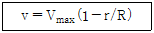
- 1/2
- 1/3
- 1/4
- 1/5
(정답률: 40%)
32. 전압이 1atm에서 n-헥산과 n-옥탄의 혼합물이 기-액 평형에 도달하였다. n-헥산과 n-옥탄의 순성분 증기압이 1025mmHg 와 173mmHg 이다. 라울의 법칙이 적용될 경우 n-헥산의 기상 평형 조성은 약 얼마인가?
- 0.93
- 0.69
- 0.57
- 0.49
(정답률: 45%)
33. 상계점(plait point)에 대한 설명 중 틀린 것은?
- 추출상과 추잔상의 조성이 같아지는 점
- 분배곡선과 용해도곡선과의 교점
- 임계점(critical point)으로 불리기도 하는 점
- 대응선(tie-line)의 길이가 0 이 되는 점
(정답률: 58%)
34. FPS 단위로부터 레이놀즈수를 계산한 결과 1000 이었다. MKS 단위로 환산하여 레이놀즈수를 계산하면 그 값은 얼마로 예상할 수 있는가?
- 10
- 136
- 1000
- 13600
(정답률: 63%)
35. 건조조작에서 임계함수율(critical moisture content)을 옳게 설명한 것은?
- 건조 속도가 0 일 때의 함수율이다.
- 감률 건조기간이 끝날 때의 함수율이다.
- 항률 건조기간에서 감률 건조기간으로 바뀔 때의 함수율이다.
- 건조조작이 끝날 때의 함수율이다.
(정답률: 66%)
36. 확산에 의한 물질전달현상을 나타낸 Fick 의 법칙처럼 전달속도, 구동력 및 저항사이의 관계식으로 일반화되는 점에서 유사성을 갖는 법칙은 다음 중 어느 것인가?
- Stefan-Boltzman 법칙
- Henry 법칙
- Fourier 법칙
- Raoult 법칙
(정답률: 65%)
37. 공극률(porosity)이 0.3 인 충전탑 내를 유체가 유효 속도(superficial velocity) 0.9m/s 로 흐르고 있을 때 충전탑내의 평균 속도는 몇 m/s 인가?
- 0.2
- 0.3
- 2.0
- 3.0
(정답률: 63%)
38. 다음 중에서 Nusselt 수(NNu)를 나타내는 것은? (단, h 는 경막열전달계수, D 는 관의 직경, k 는 열전도도 이다.)
- k · D · h
- k · D
- D / (k · h)
- (D · h) / k
(정답률: 64%)
39. 혼합에 영향을 주는 물리적 조건에 대한 설명으로 옳지 않은 것은?
- 섬유상의 형상을 가진 것은 혼합하기가 어렵다.
- 건조분말과 습한 것의 혼합은 한 쪽을 분할하여 혼합한다.
- 밀도차가 클 때는 밀도가 큰 것이 아래로 내려가므로 상하가 고르게 교환되도록 회전방법을 취한다.
- 액체와 고체의 혼합·반죽에서는 습윤성이 적은 것이 혼합하기 쉽다.
(정답률: 66%)
40. 원심 펌프의 장점에 대한 설명으로 가장 거리가 먼 것은?
- 대량 유체 수송이 가능하다.
- 구조가 간단하다.
- 처음 작동 시 Priming 조작을 하면 더 좋은 양정을 얻는다.
- 용량에 비해 값이 싸다.
(정답률: 49%)
3과목: 공정제어
41. PI제어기는 Bode diagram상에서 어떤 특징을 갖는가? (단, τI 는 PI제어기의 적분시간을 나타낸다.)
- ωτI가 1일 때 위상각이 -45°
- 위상각이 언제나 0
- 위상 앞섬(phase lead)
- 진폭비가 언제나 1보다 작음
(정답률: 46%)
42. 비례 제어기를 이용하는 어떤 폐루프 시스템의 특성방정식이
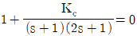
와 같이 주어진다. 다음 중 진동응답이 예상되는 경우는?- Kc = -1.25
- Kc = 0
- Kc = 0.25
- Kc 에 관계없이 진동이 발생된다.
(정답률: 48%)
43. 다음 중 0 이 아닌 잔류편차(offset)를 발생시키는 제어방식이며 최종값 도달시간을 가장 단축시킬 수 있는 것은?
- P형
- PI형
- PD형
- PID형
(정답률: 55%)
44. 어떤 1차계의 함수가
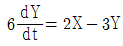
일 때 이 계의 전달함수의 시정수(times constant)는?- 2/3
- 3
- 1/2
- 2
(정답률: 54%)
45. 앞먹임 제어(feedforward control)의 특징으로 옳은 것은?
- 공정모델값과 측정값과의 차이를 제어에 이용
- 외부교란변수를 사전에 측정하여 제어에 이용
- 설정점(set point)을 모델값과 비교하여 제어에 이용
- 제어기 출력값은 이득(gain)에 비례
(정답률: 72%)
46. 센서는 선형이 되도록 설계되는 것에 반하여, 제어밸브는 quick opening 혹은 equal percentage 등으로 비선형 형태로 제작되기도 한다. 다음 중 그 이유로 가장 타당한 것은?
- 높은 압력에 견디도록 하는 구조가 되기 때문
- 공정 흐름과 결합하여 선형성이 좋아지기 때문
- stainless steal 등 부식에 강한 재료로 만들기가 쉽기 때문
- 충격파를 방지하기 위하여
(정답률: 59%)
47.
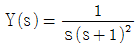
일 때에 y(t), t ≥ 0 값은?- 1+e-t-et
- 1-e-t+et
- 1-e-t-te-t
- 1-e-t+te-t
(정답률: 58%)
48. 50℃에서 150℃ 범위의 온도를 측정하여 4mA에서 20mA의 신호로 변환해 주는 변환기(transducer)에서의 영점(zero)과 변화폭(span)은 각각 얼마인가?
- 영점 = 0℃, 변화폭 = 100℃
- 영점 = 100℃, 변화폭 = 150℃
- 영점 = 50℃, 변화폭 = 150℃
- 영점 = 50℃, 변화폭 = 100℃
(정답률: 68%)
49. 탑상에서 고순도 제품을 생산하는 증류탑의 탑상 흐름의 조성을 온도로부터 추론(inferential) 제어하고자 한다. 이때 맨 위 단보다 몇 단 아래의 온도를 측정하는 경우가 있는데 다음 중 그 이유로 가장 타당한 것은?
- 응축기의 영향으로 맨 위 단에서는 다른 단에 비하여 응축이 많이 일어나기 때문에
- 제품의 조성에 변화가 일어나도 맨 위 단의 온도 변화는 다른 단에 비하여 매우 작기 때문에
- 맨 위 단은 다른 단에 비하여 공정 유체가 넘치거나(flooding) 방울져 떨어지기(weeping) 때문에
- 운전 조건의 변화 등에 의하여 맨 위 단은 다른 단에 비하여 온도는 변동(fluctuation)이 심하기 때문에
(정답률: 57%)
50. 단위 귀환(unit negative feedback)계의 개루프 전달함수가
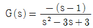
이다. 이 제어계의 폐회로 전달함수의 특정방정식의 근은 얼마인가?- -2, +2
- -2(중근)
- +2(중근)
- ±3j(중근)
(정답률: 58%)
51. 0~500℃ 범위의 온도를 4~20mA 로 전환하도록 스팬 조정이 되어 있던 온도센서에 맞추어 조율되었던 PID 제어기에 대하여, 0~250℃ 범위의 온도를 4~20mA 로 전환하도록 온도센서의 스팬을 재조정한 경우, 제어 성능을 유지하기 위하여 PID 제어기의 조율은 어떻게 바뀌어야 하는가? (단, PID 제어기의 피제어 변수는 4~20mA 전류이다.)
- 비례이득값을 2배 늘린다.
- 비례이득값을 1/2로 줄인다.
- 적분상수값을 1/2로 줄인다.
- 제어기 조율을 바꿀 필요없다.
(정답률: 59%)
52. 다음 중 공정제어의 목적과 가장 거리가 먼 것은?
- 반응기의 온도를 최대 제한값 가까이에서 운전함으로 반응속도를 올려 수익을 높인다.
- 평형반응에서 최대의 수율이 되도록 반응온도를 조절한다.
- 안전을 고려하여 일정 압력이상이 되지 않도록 반응속도를 조절한다.
- 외부 시장 환경을 고려하여 이윤이 최대가 되도록 생산량을 조정한다.
(정답률: 64%)
53. 전달함수가
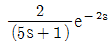
인 공정의 계단입력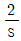
에 대한 응답형태는?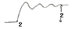
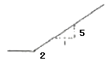
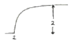
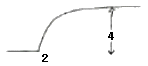
(정답률: 53%)
54. 다음 공정에 P 제어기가 연결된 닫힌루프 제어계가 안정하려면 비례이득 Kc 의 범위는? (단, 나머지 요소의 전달함수는 1 이다.)
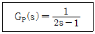
- Kc ＜ 1
- Kc ＞ 1
- Kc ＜ 2
- Kc ＞ 2
(정답률: 55%)
55. 블록선도(Block diagram)가 다음과 같은 계의 전달함수를 구하면?
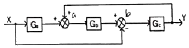
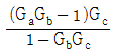
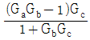
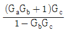
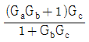
(정답률: 41%)
56. 그래프의 함수와 그의 Laplace 변환된 형태의 함수가 옳게 되어 있는 항은? (단, U(t)는 단위계단함수(unit step function)이다.)
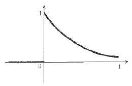
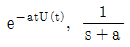
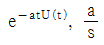
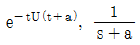
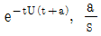
(정답률: 43%)
57. 블록선도에서 전달함수 G(s) = C(s)/R(s)를 옳게 구한 것은?
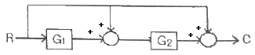
- 1 + G1G2
- 1 + G2+G1G2
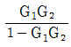
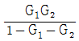
(정답률: 57%)
58. 복사에 의한 열전달 식은 q = kcAT4 으로 표현된다고 한다. 정상상태에서 T = Ts 일 때 이 식을 선형화 시키면? (단, k, c, A 는 상수 이다.)
- 4kcATs3(T-0.75Ts)
- kcA(T-Ts)
- 3kcATs3(T-Ts)
- kcATs4(T-Ts)
(정답률: 58%)
59. 전달함수 G(s)가 다음과 같은 1차계에서 입력 x(t) 가 단위충격(impulse)인 경우 출력 y(t)는?
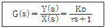
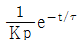
(정답률: 63%)
60. 안정한 2차계에 대한 공정응답 특성으로 옳은 것은?
- 사인파 입력에 대한 시간이 충분히 지난 후의 공정응답은 같은 주기의 사인파가 된다.
- 두 개의 1차계 공정이 직렬로 이루어진 2차계의 경우 큰 계단 입력에 대해 진동응답을 보인다.
- 공정 이득이 클수록 진동주기가 짧아진다.
- 진동응답이 발생할 때의 진동주기는 감쇠계수 ζ 에만 영향 받는다.
(정답률: 51%)
4과목: 공업화학
61. 다음 중 축합(condensation)중합반응으로 형성되는 고분자로서 알코올기와 이소시안산기의 결합으로 만들어진 것은?
- 폴리에틸렌(polyethylene)
- 폴리우레탄(polyurethane)
- 폴리메틸메타크릴레이트(poly(methylmethacrylate))
- 폴리아세트산비닐(poly(vinyl acetate))
(정답률: 46%)
62. 다음은 각 환원반응과 표준환원전위이다. 이것으로부터 예측한 다음의 현상 중 옳은 것은?
- 철은 공기 중에 노출 시 부식되지만 아연은 공기 중에서 부식되지 않는다.
- 철은 공기 중에 노출 시 부식되지만 주석은 공기 중에서 부식되지 않는다.
- 주석과 아연이 접촉 시에 주석이 우선적으로 부식된다.
- 철과 아연이 접촉 시에 아연이 우선적으로 부식된다.
(정답률: 61%)
63. 오산화바나듐(V2O5) 촉매하에 나프탈렌을 공기 중 400℃에서 산화시켰을 때 생성물은?
- 프탈산 무수물
- 초산 무수물
- 말레산 무수물
- 푸마르산 무수물
(정답률: 48%)
64. 접촉식 황산제조에서 SO3 흡수탑에 사용하기에 적합한 황산의 농도와 그 이유를 바르게 나열한 것은?
- 76.5%, 황산 중 수증기 분압이 가장 낮음
- 76.5%, 황산 중 수증기 분압이 가장 높음
- 98.3%, 황산 중 수증기 분압이 가장 낮음
- 98.3%, 황산 중 수증기 분압이 가장 높음
(정답률: 65%)
65. 다음 중 전도성 고분자가 아닌 것은?
- 폴리아닐린
- 폴리피롤
- 폴리실록산
- 폴리티오펜
(정답률: 44%)
66. 암모니아 합성용 수성가스(water gas)의 주성분은?
- H2O, CO
- CO2, H2O
- CO, H2
- H2O, N2
(정답률: 65%)
67. 수은법에 의한 NaOH 제조에 있어서 아말감 중의 Na 의 함유량이 많아지면 어떤 결과를 가져오는가?
- 유동성이 유동성이 좋아진다.
- 아말감의 분해속도가 느려진다.
- 전해질 내에서 수소가스가 발생한다.
- 불순물의 혼입이 많아진다.
(정답률: 53%)
68. 다음 중 옥탄가가 가장 낮은 것은?
- 2-Methyl heptane
- 1-Pentene
- Toluene
- Cyclohexane
(정답률: 45%)
69. 다음 중 CFC-113 에 해당되는 것은?
- CFCl3
- CFCl2CF2Cl
- CF3CHCl2
- CHClF2
(정답률: 52%)
70. 암모니아 합성장치 중 고온전환로에 사용되는 재료로서 뜨임 취성의 경향이 적은 것은?
- 18-8 스테인리스강
- Cr-Mo강
- 탄소강
- Cr-Ni강
(정답률: 62%)
71. 아세틸렌에 무엇을 작용시키면 염화비닐이 생성되는가?
- HCl
- Cl2
- HOCl
- NaCl
(정답률: 69%)
72. 용액중합반응의 일반적인 특징을 옳게 설명한 것은?
- 유화제로는 계면활성제를 사용한다.
- 온도조절이 용이하다.
- 높은 순도의 고분자물질을 얻을 수 있다.
- 물을 안정제로 사용한다.
(정답률: 50%)
73. 분자량 1.0×104g/mol 인 고분자 100g 과 분자량 2.5×104g/mol 인 고분자 50g, 그리고 분자량 1.0×105g/mol 인 고분자 50g 이 혼합되어 있다. 이 고분자 물질의 수평균 분자량은?
- 16000
- 28500
- 36250
- 57000
(정답률: 56%)
74. 수(水)처리와 관련된 보기의 설명 중 옳은 것으로만 나열한 것은?
- ①, ②, ③
- ②, ③, ④
- ①, ③, ④
- ①, ②, ④
(정답률: 64%)
75. 석유화학공정에서 열분해와 비교한 접촉분해(catalytic cracking)에 대한 설명 중 옳지 않은 것은?
- 분지지방족 C3 ~ C6 파라핀계 탄화수소가 많다.
- 방향족 탄화수소가 적다.
- 코크스, 타르의 석출이 적다.
- 디올레핀의 생성이 적다.
(정답률: 50%)
76. 20% HNO3용액 1000kg을 55% 용액으로 농축하였다. 증발된 수분의 양은 얼마인가?
- 550kg
- 800kg
- 334kg
- 636kg
(정답률: 62%)
77. 다음 중 염산의 생산과 가장 거리가 먼 것은?
- 직접합성법
- NaCl의 황산분해법
- 칠레초석의 황산분해법
- 부생염산 회수법
(정답률: 59%)
78. 순수 염화수소(HCl) 가스의 제법 중 흡착법에서 흡착제로 이용되지 않는 것은?
- MgCl2
- CuSO4
- PbSO4
- Fe3(PO4)2
(정답률: 51%)
79. Na2CO3·10H2O 중에는 H2O 를 몇 % 함유하는가?
- 48%
- 55%
- 63%
- 76%
(정답률: 63%)
80. 다음 화합물 중 산성이 가장 강한 것은?
- C6H5SO3H
- C6H5OH
- C6H5COOH
- CH3CH2COOH
(정답률: 59%)
5과목: 반응공학
81. 반응장치 내에서 일어나는 열전달 현상과 관련된 설명으로 틀린 것은?
- 발열반응의 경우 관형 반응기 직경이 클수록 관중심의 온도는 상승한다.
- 급격한 온도의 상승은 촉매의 활성을 저하시킨다.
- 모든 반응에서 고온의 조건이 바람직하다.
- 전열조건에 의해 반응의 전화율이 좌우된다.
(정답률: 66%)
82. 90mol%의 A 45mol/L 와 10mol% 의 불순물 B 5mol/L 와의 혼합물이 있다. A/B를 100/1 수준으로 품질을 유지하고자 한다. D 는 A 또는 B 와 다음과 반이 반응한다. 완전반응을 가정했을 때, 필요한 품질을 유지하기 위해서 얼마의 D를 첨가해야 하는가?
- 19.7mol
- 29.7mol
- 39.7mol
- 49.7mol
(정답률: 27%)
83. 순수한 액체 A 의 분해반응이 25℃ 에서 아래와 같을 때, A 의 초기농도가 2mol/L 이고, 이 반응이 혼합반응기에서 S를 최대로 얻을 수 있는 조건하에서 진행되었다면 S 의 최대농도는?
- 0.33mol/L
- 0.25mol/L
- 0.50mol/L
- 0.67mol/L
(정답률: 23%)
84. 어떤 반응에서 1/CA 을 시간 t 로 플롯하여 기울기 1인 직선을 얻었다. 이 반응의 속도식은?
- -rA = CA
- -rA = 2CA
- -rA = CA2
- -rA = 2CA2
(정답률: 53%)
85. 비가역 직렬반응 A→R→S 에서 1단계는 2차반응, 2단계는 1차반응으로 진행되고 R이 원하는 제품일 경우 다음 설명 중 옳은 것은?
- A의 농도를 높게 유지할수록 좋다.
- 반응 온도를 높게 유지할수록 좋다.
- 혼합흐름 반응기가 플러그 반응기보다 성능이 더 좋다.
- A 의 농도는 R 의 수율과 직접 관계가 없다.
(정답률: 59%)
86. 액상 반응이 다음과 같이 병렬 반응으로 진행될 때 R을 많이 얻고 S를 적게 얻으려면 A, B 의 농도는 어떻게 되어야 하는가?
- CA 는 크고, CB 도 커야 한다.
- CA 는 작고, CB 도 커야 한다.
- CA 는 크고, CB 도 작아야 한다.
- CA 는 작고, CB 도 작아야 한다.
(정답률: 66%)
87. 밀도가 일정한 비가역 1차 반응 A Product 가 혼합흐름반응기(mixed flow reactor 또는 CSTR)에서 등온으로 진행될 때 정상사태 조건에서의 성능 방정식(performance equation)으로 옳은 것은? (단, τ 는 공간속도, k 는 속도상수, CA0 는 초기농도, XA 는 전화율, CAf 는 유출농도 이다.)
(정답률: 38%)
88. 혼합반응기(CSTR)에서 균일액상반응 A→R, -rA = kCA2인 반응이 일어나 50% 의 전화율을 얻었다. 이때 이 반응기의 다른 조건은 변하지 않고 반응기 크기만 6배로 증가한다면 전화율은 얼마인가?
- 0.65
- 0.75
- 0.85
- 0.95
(정답률: 57%)
89. 회분식 반응기에서 일어나는 다음과 같은 1차 가역 반응에서 A만으로 시작했을 때 A의 평형 전화율은 60%이다. 평형상수 k 는 얼마인가?
- 1.5
- 2
- 2.5
- 3
(정답률: 51%)
90. 다음은 n차(n ＞0) 단일 반응에 대한 한 개의 혼합 및 플러그 흐름 반응기 성능을 비교 설명한 내용이다. 옳지 않은 것은? (단, Vm 은 혼합흐름반응기 부피, Vp 는 플러그흐름 반응기 부피를 나타낸다.)
- Vm 은 Vp 보다 크다.
- Vm/Vp 는 전화율의 증가에 따라 감소한다.
- Vm/Vp 는 반응차수에 따라 증가한다.
- 부피변화 분율이 증가하면 Vm/Vp 가 증가한다.
(정답률: 43%)
91. 일반적인 반응 A → B 에서 생성되는 물질 기준의 반응속도 표현을 옳게 나타낸 것은? (단, n 은 몰수, VR 은 반응기의 부피이다.)
(정답률: 54%)
92. 회분식 반응기에서 0.5차 반응을 10min 동안 수행하니 75% 의 액체 반응물 A 가 생성물 R 로 전화되었다. 같은 조건에서 15min 간 반응을 시킨다면 전화율은 약 얼마인가?
- 0.75
- 0.85
- 0.90
- 0.94
(정답률: 36%)
93. 부피 3.2L 인 혼합흐름 반응기에 기체 반응물 A 가 1L/s 로 주입되고 있다. 반응기에서는 A → 2P 의 반응이 일어나며 A 의 전화율은 60% 이다. 반응물의 평균 체류시간은?
- 1초
- 2초
- 3초
- 4초
(정답률: 53%)
94. 회분식 반응기 내에서의 균일계 액상 1차 반응 A → R 과 관계가 없는 것은?
- 반응속도는 반응물 A 의 농도에 정비례한다.
- 전화율 XA 는 반응시간에 정비례 한다.
- 와 반응시간과의 관계는 직선으로 나타난다.
- 반응속도 상수의 차원은 시간의 역수이다.
(정답률: 50%)
95. A + B → R 인 2차 반응에서 CA0 와 CB0 의 값이 서로 다를 때 반응속도상수 k를 얻기 위한 방법은?
- 와 t 를 도시(plot)하여 원점을 지나는 직선을 얻는다.
- 와 t 를 도시(plot)하여 원점을 지나는 직선을 얻는다.
- 와 t 를 도시(plot)하여 절편이 인 직선을 얻는다.
- 기울기가 1+(CA0-CB0)2k 인 직선을 얻는다.
(정답률: 51%)
96. 단일상 이상(理想)반응기가 아닌 것은?
- 회분식 반응기
- 플러그 흐름 반응기
- 유동층 반응기
- 혼합 흐름 반응기
(정답률: 67%)
97. 80% 전화율을 얻는데 필요한 공간시간이 4h 인 혼합흐름 반응기에서 3L/min을 처리하는데 필요한 반응기 부피는 몇 L 인가?
- 576
- 720
- 900
- 960
(정답률: 65%)
98. 직렬로 연결된 2개의 혼합흐름반응기에서 다음과 같은 액상반응이 진행될 때 두 반응기의 체적 V1 과 V2 의 합이 최소가 되는 체적비 V1/V2 에 관한 설명으로 옳은 것은? (단, V1 은 앞에 설치된 반응기의 체적이다.)
- 0 ＜ n ＜ 1 이면 V1/V2 는 항상 1보다 작다.
- n = 1 이면 V1/V2 는 항상 1 이다.
- n ＞ 1 이면 V1/V2 는 항상 1보다 크다.
- n ＞ 0 이면 V1/V2 는 항상 1 이다.
(정답률: 59%)
99. A → R 로 표시되는 화학반응의 반응열이 ΔHr = 1800cal/mol A 로 일정할 때 입구온도 95℃ 인 단열반응기에서 A 의 전화율이 50% 이면, 반응기의 출구온도는 몇 ℃ 인가? (단, A와 R의 열용량은 각각 10cal/mol·K 이다.)
- 5
- 15
- 25
- 35
(정답률: 34%)
100. 비가역 액상 0차 반응에서 반응이 완전히 완결되는데 필요한 반응시간은?
- 초기농도의 역수와 같다.
- 속도상수의 역수와 같다.
- 초기농도를 속도상수로 나눈 값과 같다.
- 초기농도에 속도상수를 곱한 값과 같다.
(정답률: 68%)
P1V11.3 = P2V21.3
2.3 x V11.3 = 4.6 x V21.3
V2 = (2.3/4.6)1/1.3 x V1 = 0.843 x V1
질소가스의 상태방정식인 PV = nRT 를 이용하여, V1 = nRT1/P1, V2 = nRT2/P2 이므로,
T2 = (P2/P1) x (V1/V2) x T1 = (4.6/2.3) x (1/0.843) x 367 K = 430 K
따라서, 질소가스의 최종 온도는 약 430 K 이다.